pbc <- survival::pbc %>%
as_tibble() %>%
janitor::clean_names() %>%
mutate(
sex = factor(sex, levels = c("f", "m"), labels = c("Female", "Male")),
stage = factor(stage, levels = 1:4, labels = paste("Stage", 1:4))
)6 Basic Data Visualization
6.1 When Do You Use This?
Before reporting any statistical result, you must plot the data. A well-chosen graph shows you things a table cannot: whether a distribution is skewed, whether two groups overlap, whether there is a trend, and whether any values look unusual. This session teaches the core plot types you will use in every analysis.
6.2 Learning Objectives
After completing this session you will be able to:
- Explain the grammar of graphics: data, aesthetics, and geometries
- Create histograms, density plots, boxplots, scatter plots, and bar charts with
ggplot2 - Map variables to color, fill, shape, and facets
- Add axis labels, titles, and themes appropriate for publications
- Choose the right plot type for a given research question
6.3 Background: The Grammar of Graphics
ggplot2 is built on the grammar of graphics: every plot is constructed from layers.
| Component | What it does | Example |
|---|---|---|
ggplot(data, aes(...)) |
Set the data and aesthetic mappings | ggplot(pbc, aes(x = age, y = bili)) |
geom_*() |
Choose the geometric shape | geom_point(), geom_histogram() |
scale_*() |
Control axis/color scales | scale_color_manual() |
facet_*() |
Split into subplots | facet_wrap(~ sex) |
labs() |
Add titles and axis labels | labs(title = "...", x = "...") |
theme_*() |
Control visual appearance | theme_bw(), theme_classic() |
You build a plot by adding layers with +. Each layer can see the same data, or its own.
6.4 Example 1: Clinical Data (PBC)
We use the pbc dataset throughout — 418 patients with primary biliary cholangitis, a real clinical trial.
6.4.1 Histogram: Visualizing a Single Continuous Variable
Use a histogram to understand the distribution of one continuous variable.
ggplot(pbc, aes(x = bili)) +
geom_histogram(bins = 30, fill = "steelblue", color = "white") +
labs(
title = "Distribution of serum bilirubin",
x = "Bilirubin (mg/dL)",
y = "Count"
) +
theme_bw()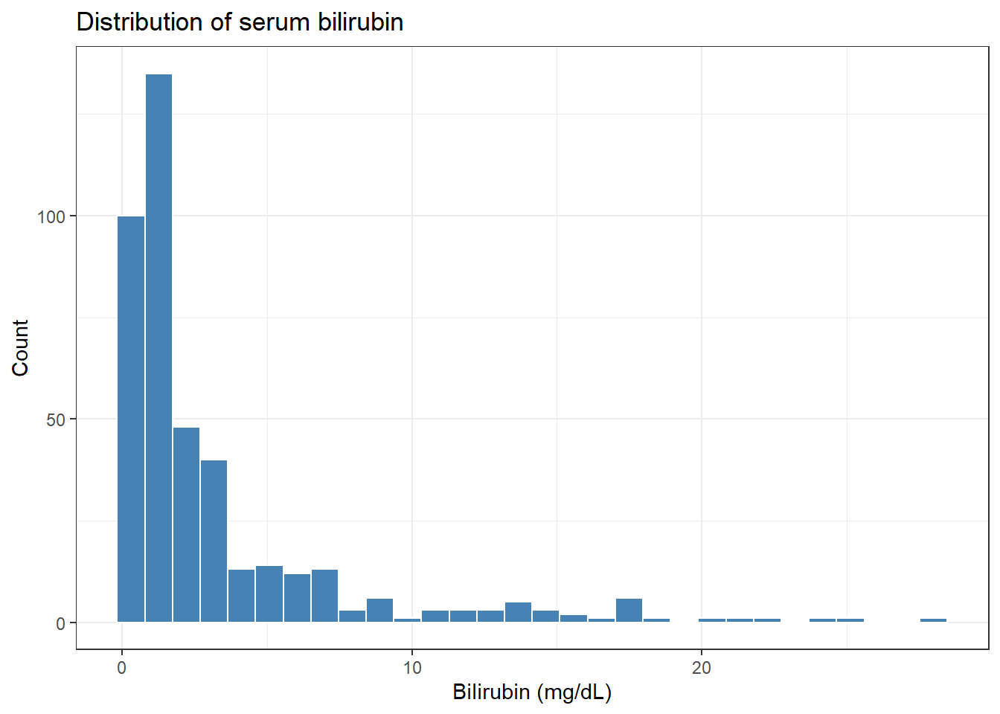
The distribution is right-skewed: most patients have low bilirubin, but a few have very high values.
Choosing the number of bins: too few bins hide the shape; too many make it noisy. bins = 25 to bins = 40 works for most datasets with 100–500 observations.
6.4.2 Density Plot: Smoother Version of a Histogram
ggplot(pbc, aes(x = bili, fill = sex)) +
geom_density(alpha = 0.4) +
scale_fill_manual(values = c("Female" = "steelblue", "Male" = "tomato")) +
labs(
title = "Bilirubin distribution by sex",
x = "Bilirubin (mg/dL)",
y = "Density",
fill = "Sex"
) +
theme_bw()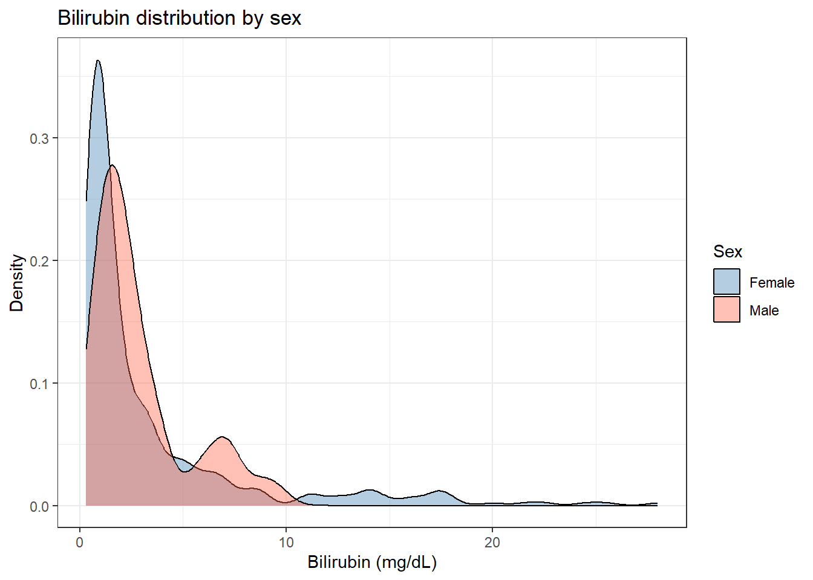
6.4.3 Boxplot: Comparing Groups
Use a boxplot when you want to compare a continuous variable across two or more groups.
pbc %>%
filter(!is.na(stage)) %>%
ggplot(aes(x = stage, y = bili, fill = stage)) +
geom_boxplot(alpha = 0.7, outlier.shape = NA) +
geom_jitter(width = 0.15, alpha = 0.3, size = 1.2) +
scale_fill_brewer(palette = "Blues") +
labs(
title = "Bilirubin by disease stage",
x = NULL,
y = "Bilirubin (mg/dL)"
) +
theme_bw() +
theme(legend.position = "none")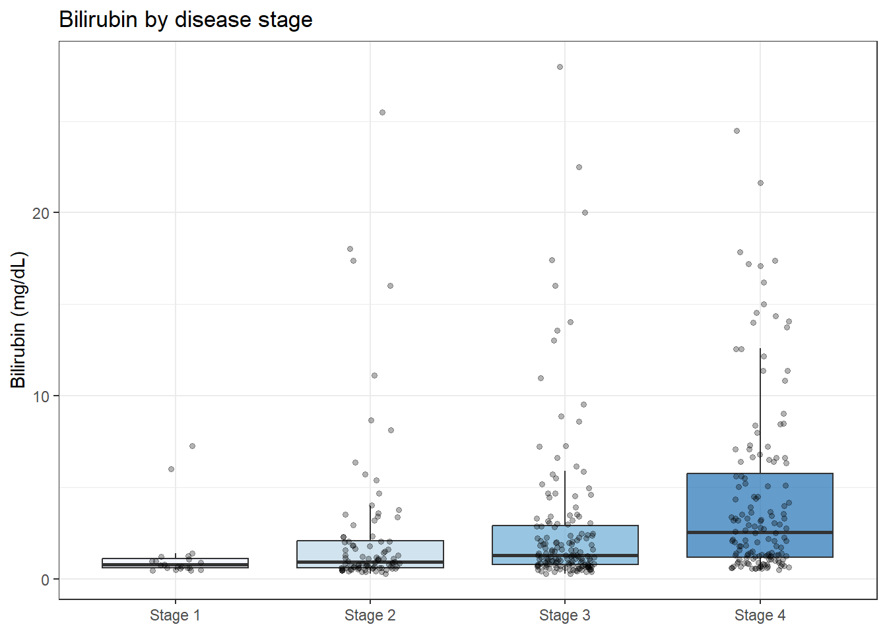
Note
Reading a boxplot: - The horizontal line = median (50th percentile) - The box = interquartile range (IQR): 25th to 75th percentile - The whiskers extend to 1.5 x IQR beyond the box - Points beyond the whiskers = potential outliers
Adding geom_jitter() on top shows individual observations, which is important with small sample sizes.
6.4.4 Scatter Plot: Relationship Between Two Continuous Variables
Use a scatter plot to examine whether two continuous variables are associated.
ggplot(pbc, aes(x = age, y = bili, color = sex)) +
geom_point(alpha = 0.6, size = 2) +
geom_smooth(method = "lm", se = TRUE) +
scale_color_manual(values = c("Female" = "steelblue", "Male" = "tomato")) +
labs(
title = "Age and serum bilirubin by sex",
subtitle = "Lines show linear trend with 95% confidence band",
x = "Age (years)",
y = "Bilirubin (mg/dL)",
color = "Sex"
) +
theme_bw()`geom_smooth()` using formula = 'y ~ x'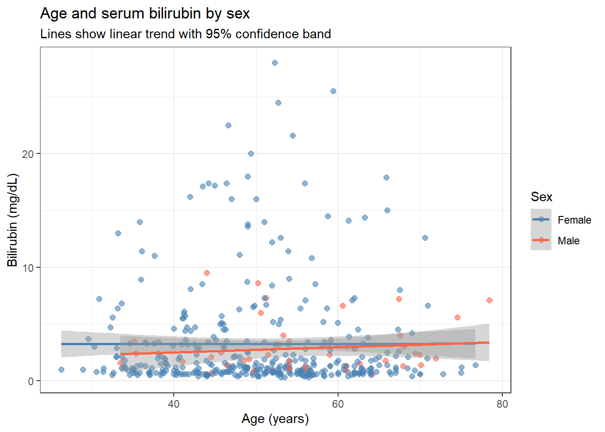
6.4.5 Bar Chart: Counts of a Categorical Variable
Use a bar chart when you want to show counts or proportions across categories.
pbc %>%
filter(!is.na(stage)) %>%
ggplot(aes(x = stage, fill = sex)) +
geom_bar(position = "fill") +
scale_y_continuous(labels = scales::percent_format()) +
scale_fill_manual(values = c("Female" = "steelblue", "Male" = "tomato")) +
labs(
title = "Sex distribution by disease stage",
x = NULL,
y = "Proportion",
fill = "Sex"
) +
theme_bw()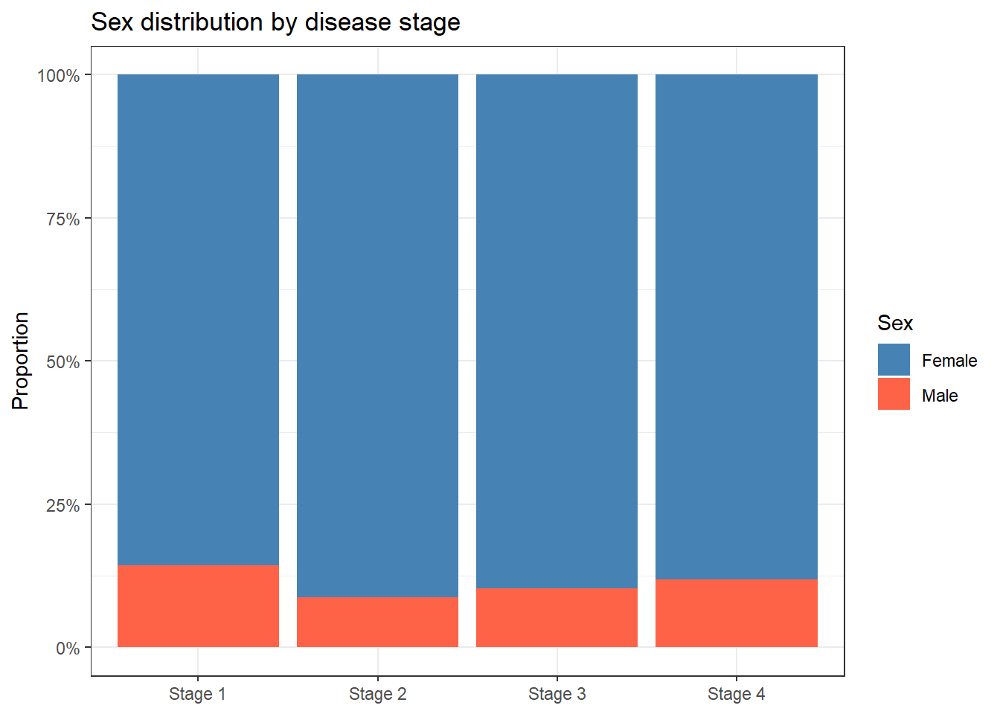
position = "fill" rescales bars to 100%, making proportional comparisons easier than raw counts.
6.5 Example 2: Animal Data (Penguins)
The palmerpenguins dataset is a clean multi-species penguin dataset, useful as a stand-in for animal experiment data with groups and continuous measurements.
penguins_clean <- penguins %>% drop_na()6.5.1 Combining Plot Types: Violin + Boxplot
ggplot(penguins_clean, aes(x = species, y = body_mass_g, fill = species)) +
geom_violin(alpha = 0.4, trim = FALSE) +
geom_boxplot(width = 0.15, fill = "white", outlier.shape = NA) +
scale_fill_brewer(palette = "Set2") +
labs(
title = "Body mass by penguin species",
x = NULL,
y = "Body mass (g)"
) +
theme_bw() +
theme(legend.position = "none")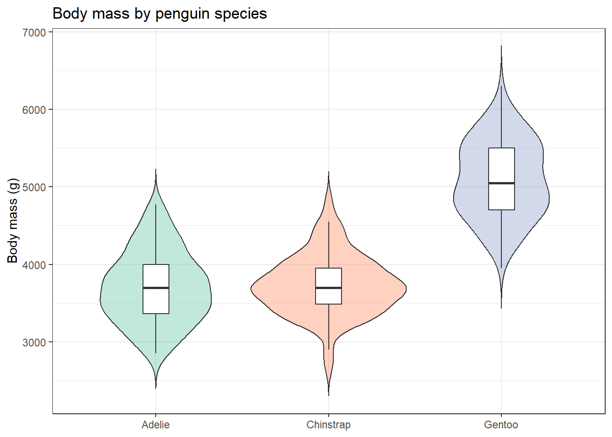
A violin plot shows the full distribution shape (like a smooth histogram rotated sideways). Combining it with an inner boxplot gives both the distribution shape and the summary statistics.
6.5.2 Faceting: Small Multiples
Use facet_wrap() to repeat the same plot for each level of a grouping variable.
ggplot(penguins_clean, aes(x = bill_length_mm, y = flipper_length_mm,
color = species)) +
geom_point(alpha = 0.7) +
facet_wrap(~ sex) +
scale_color_brewer(palette = "Set1") +
labs(
title = "Bill length vs flipper length by species and sex",
x = "Bill length (mm)",
y = "Flipper length (mm)",
color = "Species"
) +
theme_bw()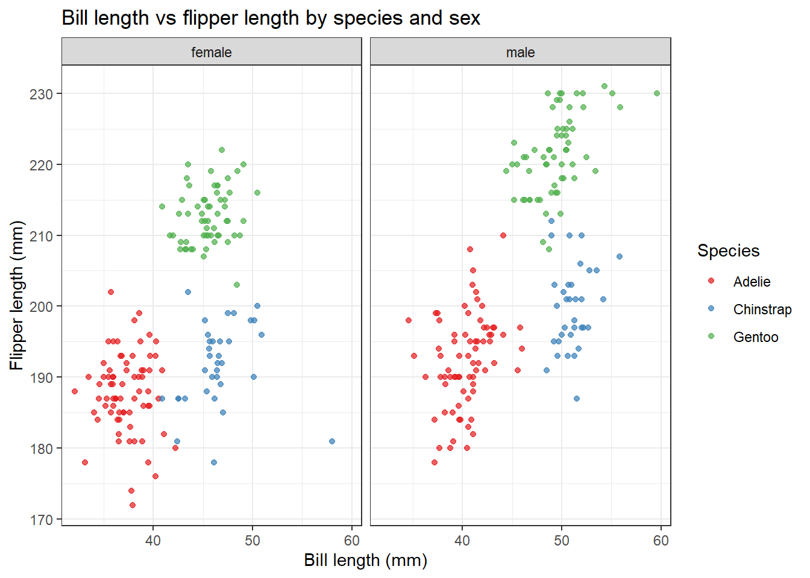
6.5.3 Combining Plots with patchwork
p1 <- ggplot(penguins_clean, aes(x = bill_length_mm)) +
geom_histogram(bins = 25, fill = "steelblue", color = "white") +
labs(title = "Bill length", x = "mm", y = "Count") +
theme_bw()
p2 <- ggplot(penguins_clean, aes(x = flipper_length_mm)) +
geom_histogram(bins = 25, fill = "tomato", color = "white") +
labs(title = "Flipper length", x = "mm", y = "Count") +
theme_bw()
wrap_plots(p1, p2) # side by side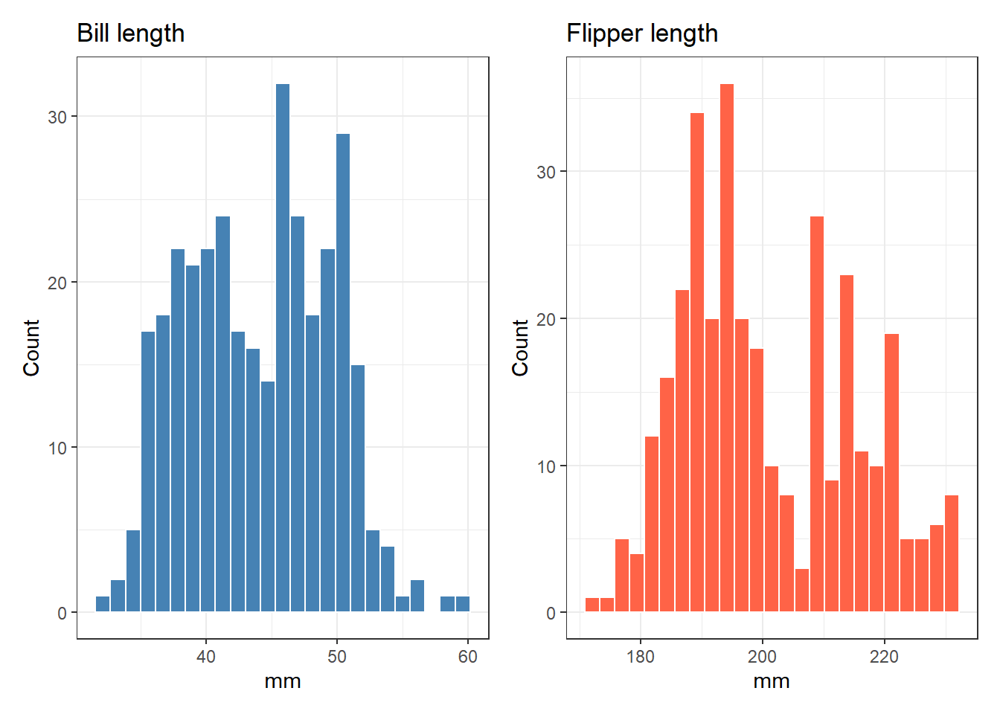
patchwork uses + to place plots side by side, / to stack them, and (p1 + p2) / p3 for more complex arrangements.
6.6 Publication-Ready Themes
For journal submissions, choose a clean theme and increase the base font size.
# theme_bw() -- white background, grey gridlines (good default)
# theme_classic() -- no gridlines, clean axes (common in biology journals)
# theme_minimal() -- minimal decoration
ggplot(pbc %>% filter(!is.na(stage)),
aes(x = stage, y = albumin, fill = stage)) +
geom_boxplot(alpha = 0.7) +
scale_fill_brewer(palette = "Set3") +
labs(title = "Serum albumin by disease stage",
x = NULL, y = "Albumin (g/dL)") +
theme_classic(base_size = 14) +
theme(legend.position = "none",
plot.title = element_text(face = "bold"))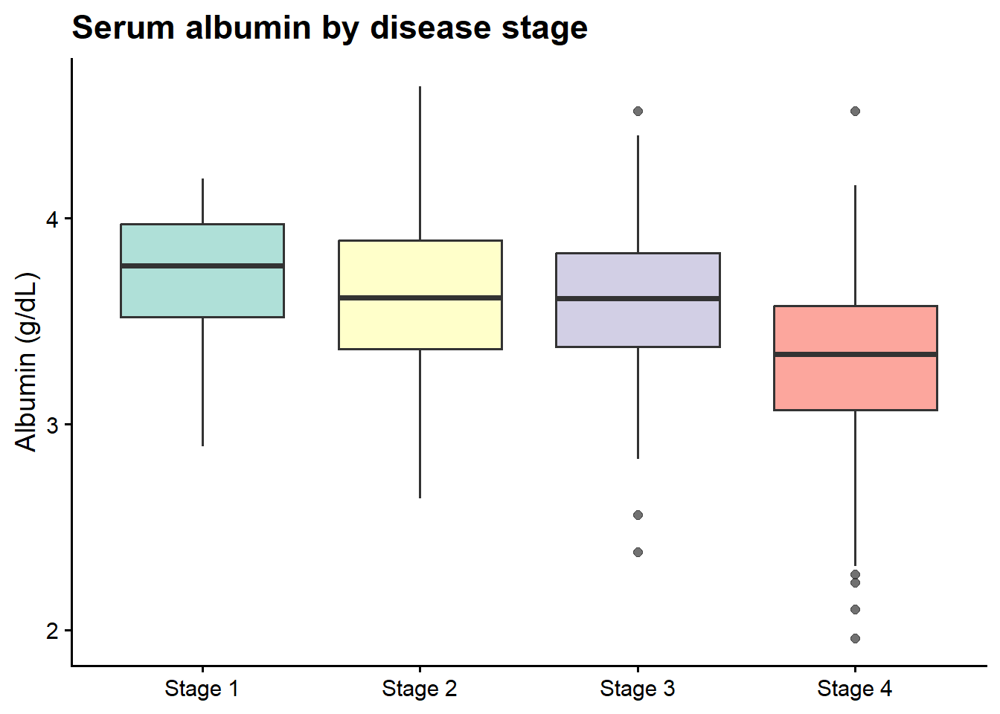
Tip
For publications: - Use theme_classic() or theme_bw() with base_size = 12 or 14 - Set legend.position to "bottom" or "none" to save horizontal space - Use scale_fill_brewer() or scale_color_brewer() for accessible colour palettes - Export with ggsave("figure1.pdf", width = 6, height = 4) for vector-format output
6.7 Where to Find Data Like This
PBC and other clinical trial datasets: Built into the survival package — no download needed. ?survival::pbc for the variable descriptions.
Palmer penguins: ::: {.cell}
install.packages("palmerpenguins")
library(palmerpenguins)
data("penguins")::: Gorman et al. (2014), collected at Palmer Station Antarctica.
Plot inspiration and code examples: - R Graph Gallery — searchable by plot type - ggplot2 extension gallery — specialist plot types
6.8 What Can Go Wrong
Overplotting in scatter plots When many points fall on the same location, the plot looks like a blob. Fix with alpha = 0.3 to make points semi-transparent, or geom_jitter() for discrete data.
Bar charts of means without showing spread A bar chart that shows only group means hides the distribution. Use boxplots, violin plots, or scatter overlays instead.
Default grey background in presentations ggplot2’s default grey theme looks poor on projector slides. Switch to theme_bw() or theme_classic().
Choosing colours that are not colourblind-safe About 8% of men have red-green colour blindness. Use scale_colour_brewer(palette = "Set1") or the viridis scale: scale_colour_viridis_d().
6.9 Exercises
6.9.1 Exercise 1 (Guided): Distribution of a Lab Value
Using survival::pbc:
- Create a histogram of
protime(prothrombin time) with 25 bins. - Create a density plot of
protimecoloured bysex. - Create a boxplot of
protimebystage. - Does the distribution look normal or skewed? Report the mean and median to check.
Exercise 1: Solution
pbc %>%
ggplot(aes(x = protime)) +
geom_histogram(bins = 25, fill = "steelblue", color = "white") +
labs(title = "Prothrombin time", x = "PT (seconds)", y = "Count") +
theme_bw()Warning: Removed 2 rows containing non-finite outside the scale range
(`stat_bin()`).
ggplot(pbc, aes(x = protime, fill = sex)) +
geom_density(alpha = 0.4) +
scale_fill_manual(values = c("steelblue", "tomato")) +
labs(title = "Prothrombin time by sex", x = "PT (seconds)") +
theme_bw()Warning: Removed 2 rows containing non-finite outside the scale range
(`stat_density()`).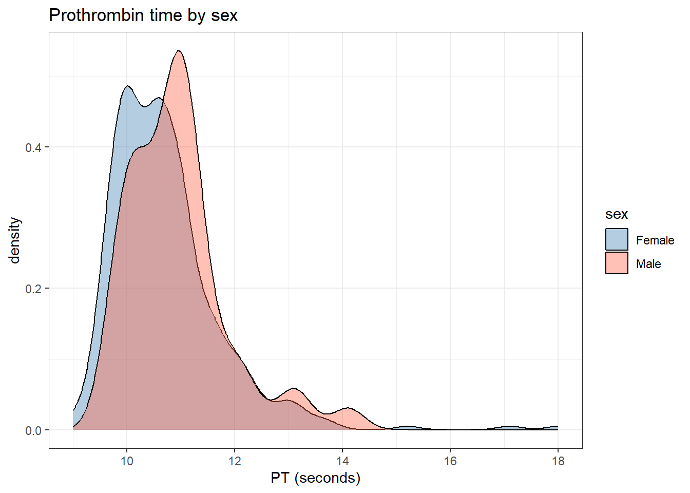
pbc %>% filter(!is.na(stage)) %>%
ggplot(aes(x = stage, y = protime, fill = stage)) +
geom_boxplot(alpha = 0.7) +
labs(x = NULL, y = "PT (seconds)") +
theme_bw() + theme(legend.position = "none")Warning: Removed 2 rows containing non-finite outside the scale range
(`stat_boxplot()`).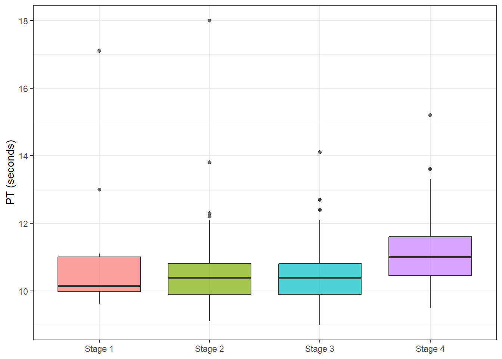
# Check skewness
pbc %>% summarise(mean_pt = mean(protime, na.rm = TRUE),
median_pt = median(protime, na.rm = TRUE))# A tibble: 1 × 2
mean_pt median_pt
<dbl> <dbl>
1 10.7 10.6The mean is slightly higher than the median — mild right skew, consistent with a lab value.
6.9.2 Exercise 2 (Semi-guided): Penguin Comparison
Using palmerpenguins::penguins:
- Create a scatter plot of
bill_length_mmvsbill_depth_mm, coloured by species. - Add
geom_smooth(method = "lm")for each species. - Facet by
island. - In one sentence: does bill length predict bill depth in the same direction for all three species?
Exercise 2: Solution
penguins %>%
drop_na() %>%
ggplot(aes(x = bill_length_mm, y = bill_depth_mm, color = species)) +
geom_point(alpha = 0.6) +
geom_smooth(method = "lm", se = FALSE) +
facet_wrap(~ island) +
scale_color_brewer(palette = "Set1") +
labs(title = "Bill dimensions by species and island",
x = "Bill length (mm)", y = "Bill depth (mm)") +
theme_bw()`geom_smooth()` using formula = 'y ~ x'
Within each species, bill length and bill depth are positively associated (longer bills are also deeper). However, the overall cross-species correlation appears negative (Chinstraps have longer but shallower bills than Adelies) — this is an example of Simpson’s Paradox.
6.9.3 Exercise 3 (Open-ended)
Take a dataset from your own research or download one from the Mouse Phenome Database. Create three plots: one showing the distribution of a continuous variable, one comparing that variable across groups, and one scatter plot of two continuous variables. Choose theme_classic() and write a one-paragraph figure legend for each plot as you would for a journal submission.
6.10 Comprehension Check
- In
ggplot(data, aes(x = age, y = bili, color = sex)), what doescolor = sexdo? - What is the difference between
colorandfillaesthetics? - You want to show the same scatter plot separately for men and women without using the
coloraesthetic. Whatggplot2function do you use? - Why should you avoid bar charts of means without showing the underlying data spread?
- Which two arguments in
geom_histogram()control the appearance of the bars?
Answers
- It maps the
sexvariable to the colour of each point, so different sexes appear in different colours.sexmust be a factor or character column for the colours to be discrete. colorcontrols the outline/border colour (for points, lines).fillcontrols the interior colour (for bars, boxes, violin plots). Histograms usefill; scatter points usecolor.facet_wrap(~ sex)orfacet_grid(. ~ sex)— these create a separate panel for each level ofsex.- A bar chart showing only the group mean hides whether the data is normally distributed, how much spread there is, and whether there are outliers. A plot that only shows means can make a large-variance group look the same as a low-variance group.
bins(number of bins) andbinwidth(width of each bin in data units). Alsofillfor interior colour andcolorfor border colour.
6.11 Further Reading
- ggplot2: Elegant Graphics for Data Analysis — Wickham’s full book, free online
- R Graph Gallery — searchable examples by plot type
- patchwork documentation — composing multi-panel figures
- Fundamentals of Data Visualization — Claus Wilke’s guide to visualization principles